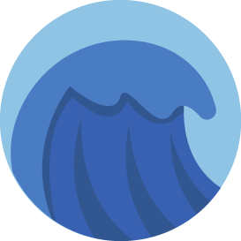

 Inicio
Aventura Marina
Explora los océanos
Vida Marina
Héroes
Amenazas
Explora y Aprende
Aprende
Recursos
Conócenos
Nosotros
Contacto
Explora los océanos
Ficha por región
Océano PacÃfico
Océano Atlántico
Océano Ãndico
Océano Ãrtico
Océano Austral (o Antártico)